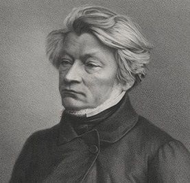
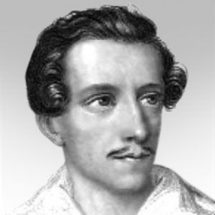
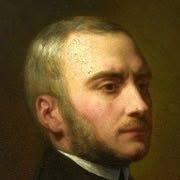

TRZECH WIESZCZÓW NARODOWYCH
Adam Mickiewicz

(ur. 24 grudnia 1798 w Zaosiu lub Nowogródku, zm. 26 listopada 1855 w Stambule) – polski poeta,
działacz polityczny, publicysta, tłumacz, filozof, działacz religijny, mistyk, organizator i
dowódca wojskowy, nauczyciel akademicki. Członek i założyciel Towarzystwa Filomatycznego,
mesjanista związany z Kołem Sprawy Bożej Andrzeja Towiańskiego. Jeden z najwybitniejszych twórców dramatu
romantycznego w Polsce, zarówno w ojczyźnie, jak i w zachodniej Europie porównywany do Byrona i Goethego.
Znany przede wszystkim
jako autor ballad, powieści poetyckich, dramatu Dziady oraz epopei narodowej Pan Tadeusz uznawanej za ostatni wielki
epos kultury szlacheckiej w Rzeczypospolitej Obojga Narodów. Narodowy poeta Polski, Litwy i Białorusi.
Juliusz Słowacki

(ur. 4 września 1809 w Krzemieńcu, zm. 3 kwietnia 1849 w Paryżu) – polski poeta,
przedstawiciel romantyzmu, dramaturg i epistolograf. Obok Mickiewicza i Krasińskiego określany jako
jeden z Wieszczów Narodowych. Twórca filozofii genezyjskiej, epizodycznie związany
także z mesjanizmem polskim. Obok Mickiewicza uznawany za największego
przedstawiciela polskiego romantyzmu. Utwory Słowackiego, zgodnie z duchem epoki i ówczesną sytuacją narodu
polskiego, podejmowały istotne problemy związane z walką narodowowyzwoleńczą, z przeszłością narodu i przyczynami
niewoli, ale także poruszały tematy egzystencjalne. Zasłynął pieśniami odwołującymi
się do Orientu, źródeł ludowych i słowiańszczyzny.
Zygmunt Krasiński

(ur. 19 lutego 1812 w Paryżu, zm. 23 lutego 1859) – jeden z największych poetów polskiego romantyzmu.
Debiutował w 1828 jako autor przepojonych makabrą
opowieści gotyckich. Już wtedy ujawniły się charakterystyczne cechy pisarstwa Krasińskiego:
jego obsesja cierpienia, zagłady i śmierci, wewnętrzny konflikt między życiowym konwenansem
a etosem romantycznej walki narodowowyzwoleńczej, dały obfity plon w postaci twórczości literackiej
, obrazów piekielnych oraz ostrych dysonansów na tle religijnym i społecznym. Około roku 1847,
wieszcz zastąpił skrajną rozpacz dotychczasowych dzieł
przesłaniem etyki chrześcijańskiej, która uzupełniona o myśl mesjanistyczną, przerodzi się w
żarliwe zawołania do ewangelicznej miłości.
Poznaj język polski - Łukasz Wołoszyn © 2021
| Kontakt |